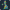

<body style="margin:0;background:#fff;font:15px system-ui;color:#1E2A36;padding:24px"><div style="display:grid;grid-template-columns:repeat(5,1fr);gap:22px">
<figure style='margin:0'><div style='display:flex;gap:10px;align-items:center;margin-top:6px'><canvas data-src='./marks/i7-pixel-minimal.svg' width=16 height=16 style='width:32px;height:32px;image-rendering:pixelated'></canvas></div><figcaption>I7 pixels (for comparison)</figcaption></figure>
<figure style='margin:0'><div style='display:flex;gap:10px;align-items:center;margin-top:6px'><canvas data-src='./marks/shapes/lp-coarse.svg' width=16 height=16 style='width:32px;height:32px;image-rendering:pixelated'></canvas></div><figcaption>Low-poly, coarse</figcaption></figure>
<figure style='margin:0'><div style='display:flex;gap:10px;align-items:center;margin-top:6px'><canvas data-src='./marks/shapes/lp-coarse-b.svg' width=16 height=16 style='width:32px;height:32px;image-rendering:pixelated'></canvas></div><figcaption>Low-poly, coarse, other mesh</figcaption></figure>
<figure style='margin:0'><div style='display:flex;gap:10px;align-items:center;margin-top:6px'><canvas data-src='./marks/shapes/lp-medium.svg' width=16 height=16 style='width:32px;height:32px;image-rendering:pixelated'></canvas></div><figcaption>Low-poly, finer</figcaption></figure>
<figure style='margin:0'><div style='display:flex;gap:10px;align-items:center;margin-top:6px'><canvas data-src='./marks/shapes/lp-medium-b.svg' width=16 height=16 style='width:32px;height:32px;image-rendering:pixelated'></canvas></div><figcaption>Low-poly, finer, other mesh</figcaption></figure>
</div><p style="color:#4A5866;font-size:13px">Under each: 32 px, 16 px magnified (real pixels), 16 px actual.</p><script>for(const c of document.querySelectorAll("canvas")){const i=new Image();i.onload=()=>c.getContext("2d").drawImage(i,0,0,16,16);i.src=c.dataset.src}</script></body>
